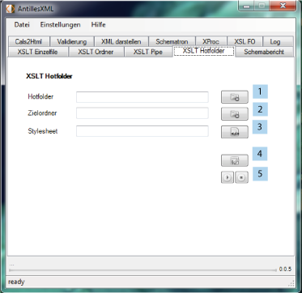

Mit dieser Funktion kann ein Ordner im Dateisystem zu einem sogenannten "Hotfolder" werden.
Der Benutzer muss zuvor diesem Ordner noch ein Stylesheet und einen Zielordner zuweisen.
Ist dies erledigt, werden sämtliche XML-Dokumente die in diesen Ordner kopiert oder innerhalb
dessen verändert werden, automatisch mit dem angegebenen Stylesheet transformiert und das
entsprechende Ausgabedokument in den Zielordner geschrieben.

Um einen Hotfolder zu konfigurieren muss der eigentliche Ordner ausgewählt werden (1). Dann den Zielordner(2) und das Stylesheet (3). Weiterhin können die im Stylesheet hinterlegten Parameter(4) verarbeitet oder neue hinzugefügt werden. Mit dem "Ausführen" Button(5) wird der Hotfolder gestartet und mit dem Beenden Button (5) deaktiviert.